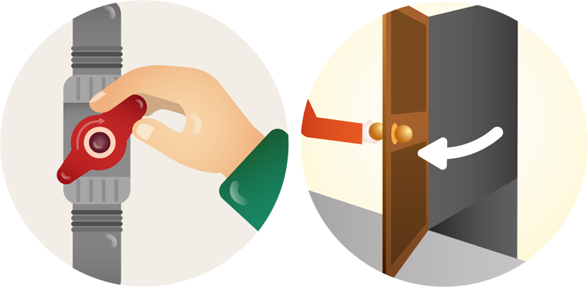

지진은 보통 1분 이내에 종료되지만 추가 붕괴나 화재가 발생할 수 있습니다. 지진이 일단 멈추면 가스밸브를 잠그고 난로 등 전열기를 끕니다.
 문을 열어 둡니다. 여진이나 사후 붕괴가 발생해 문이 뒤틀려 열리지 않을 경우에 대비해 미리 탈출구를 확보하는 것입니다.
집 안에서도 신발을 신고, 손 닿는 곳에 식수와 수건을 챙겨 둡니다.
불이 났거나 벽에 금이 가고 무너질 위험이 있는 건물에서는 지진이 멈추면 즉시 나와 대피해야 합니다.
지진 직후에는 엘리베이터를 이용하면 위험합니다. 엘리베이터 안에서 지진을 감지했다면, 바로 모든 층의 버튼을 눌러 가장 가까운 층에서 내립니다.
수건에 물을 적셔 코와 입을 가리고 열기와 먼지로부터 호흡기관을 보호합니다.
해안가에서는 붕괴 여부와 상관없이 지진이 멈추면 최대한 빨리 건물에서 나와 고지대로 이동해 쓰나미로부터 대피해야 합니다.